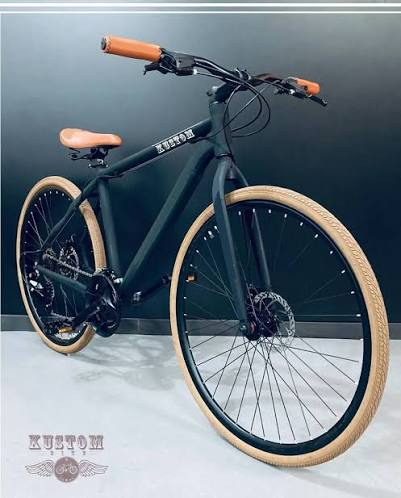
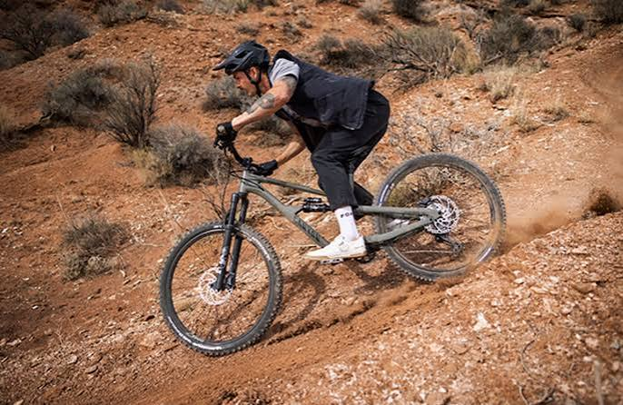
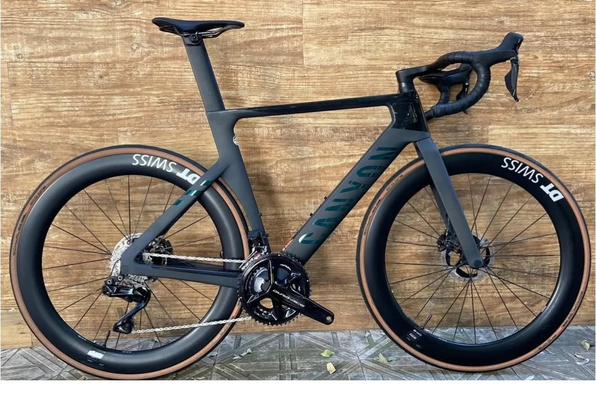

Bicicleta urbana

Feita para trajetos curtos no dia a dia, prioriza conforto na postura em vez de velocidade. É a mais fácil de manter — geralmente basta calibrar os pneus e lubrificar a corrente periodicamente.
Cada tipo de bike pede uma pressão de pneu e uma atenção diferente na manutenção.
| Tipo | Uso ideal | Pressão recomendada do pneu |
|---|---|---|
| Urbana | Deslocamento no dia a dia, asfalto | 40 a 65 PSI |
| Mountain bike | Trilhas, terrenos irregulares | 25 a 35 PSI |
| Speed | Estrada, treino e velocidade | 90 a 120 PSI |
| Regra geral: pneus muito abaixo da pressão recomendada aumentam o esforço para pedalar e o risco de furos — calibre pelo menos uma vez por semana. | ||

Feita para trajetos curtos no dia a dia, prioriza conforto na postura em vez de velocidade. É a mais fácil de manter — geralmente basta calibrar os pneus e lubrificar a corrente periodicamente.

Tem pneus mais largos e "cravados" para dar tração em terra e pedras.
Recomendação antiga de calibragem: 20 a 30 PSI
25 a 35 PSI, ajustada para reduzir o risco de furo por
impacto direto na roda (o chamado "beliscão").

Pneus finos e guidão curvo (guidão "gancho"), feita para reduzir o atrito com o ar e rodar mais rápido no asfalto. Exige calibragem alta e verificação frequente, porque pneus finos perdem pressão mais rápido.